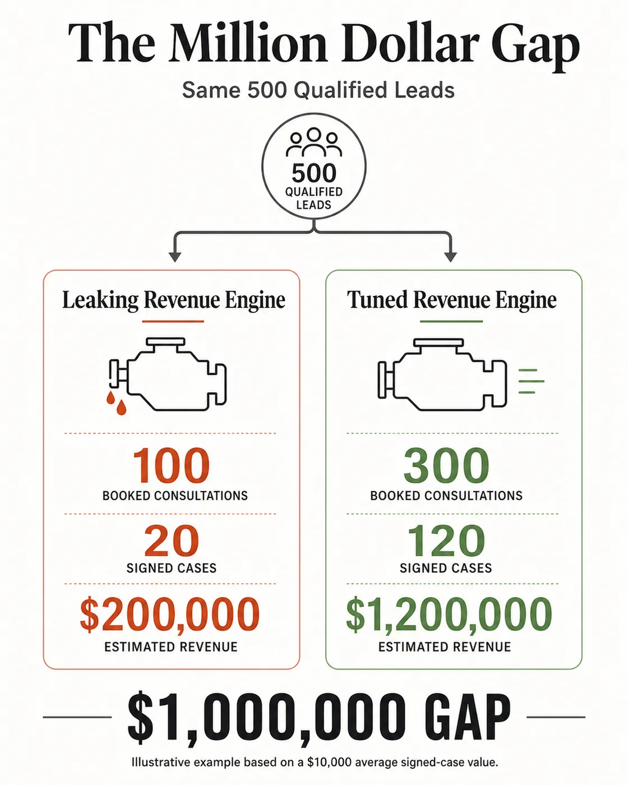
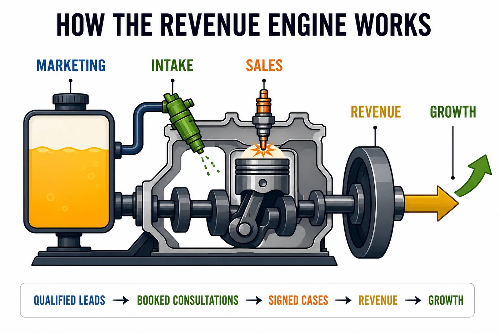
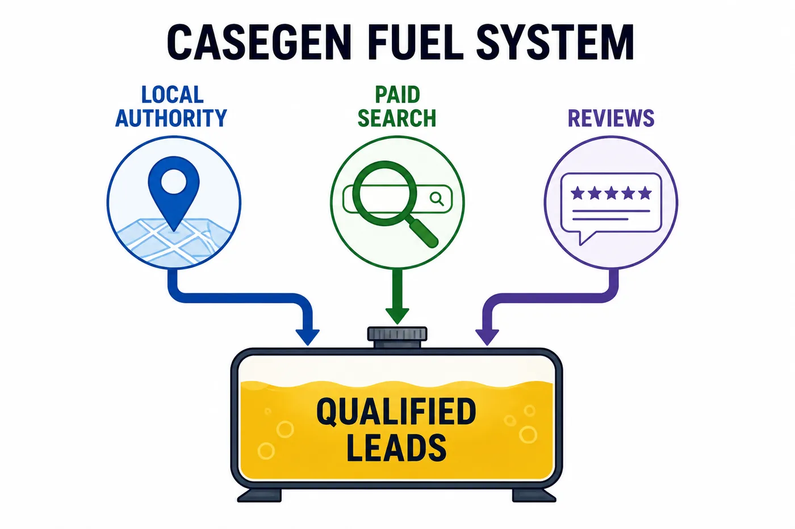
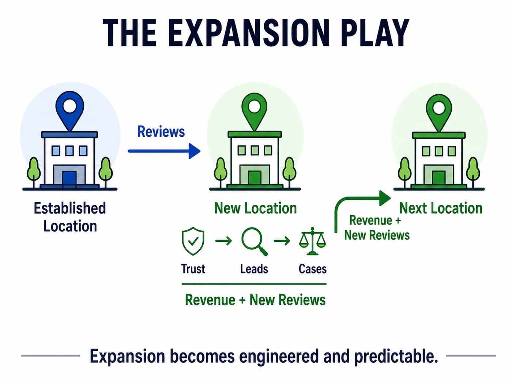
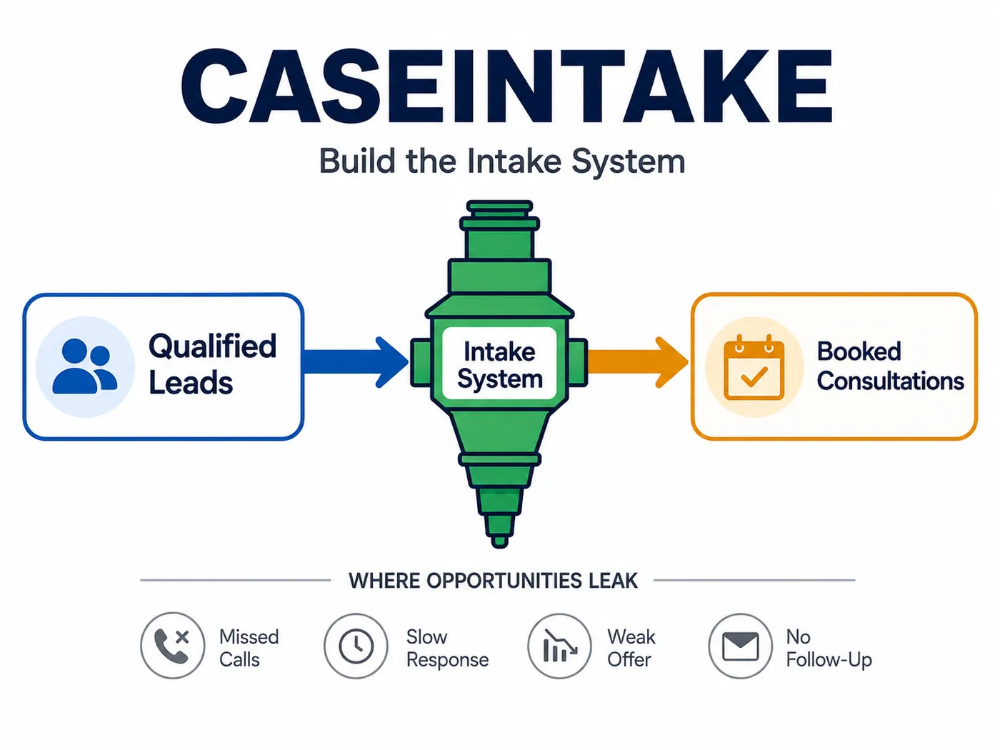
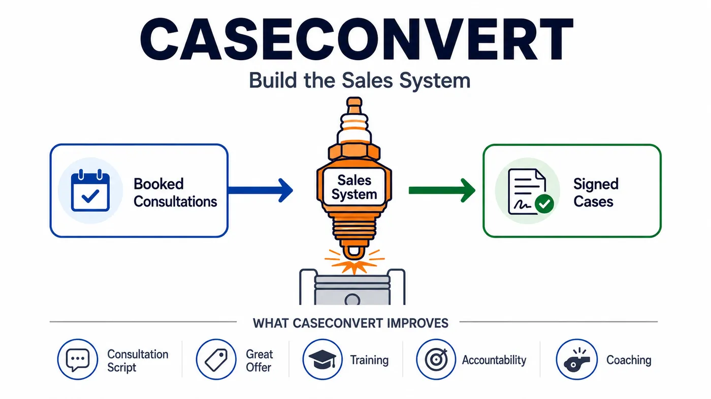

Introduction
Introduction
I was on a conference call when I found out. My team and I were meeting to discuss the results of our work with Guardian & Baron, an Elder Law firm with a series of offices in the Pittsburgh area. (Note: all names throughout this book have been changed to ensure client privacy.)
It was our first real-world test of CaseGen, the marketing system inside our newly-launched Law Firm Revenue Engine product.
I can’t tell you how nervous I was to get on that call.
I’d made a big bet that our product could systematically drive explosive growth in any law firm.
Sure, that’s a big bet for Guardian & Baron, you might say, but not for me. But no, I mean, it was a big bet for me, and my whole team knew it.
I was guaranteeing that we’d be profitable in three months or less. Not that we’d hand them a certain number of leads, but that we’d generate a certain amount of revenue. I’d laid $15,000 on the claim that they would see something incredible happen inside their firm. And we were a brand-new company. I would have to cover that personally or it’d bankrupt our business.
I also knew what this meant for Guardian & Baron. One of the founding attorneys was deeply burned out on Marketing and he’d come to expect lukewarm results that never merited the effort. I knew he was only giving me a shot because I’d been a guest speaker on a podcast he listened to, and the host had vouched for me. If it didn’t work out, his flickering hope for his business’s growth would die entirely. I knew what that could do to an attorney and a firm.
My bet was simple:
My theory was that I could get any struggling law firm to grow explosively, with what I’d come to understand about business growth and law firms.
I’d picked Guardian & Baron because they were a perfect test for that theory and the product that’d been born out of it: the Law Firm Revenue Engine.
Guardian & Baron hadn’t grown in years. They had three office locations, but two of them didn’t generate enough calls to offset the expense.
We’d bet our own existence on the theory that, with what we knew about the internal workings of their law firm, if we got their Marketing unerringly lean, effective, and pointed correctly toward their Intake team, their revenue would rocket upward.
My employees had spent the day preparing the data into a full report. I joined the call, ready to find out whether my theories would prove true.
I was astounded. I’d expected success, in the sense that I’d spent years analyzing successful law firms to figure out what made the best go explosive, but in my heart, part of me didn’t really believe such a thing could be known, much less replicable in an installable way.
Up from three, Guardian & Baron was generating thirty reviews a month. Where they struggled to get 70 calls per month before, now, they’d begun receiving over 300 calls every month. Better, those calls were turning into signed cases. Soon, they were regularly informing us of the cases they’d signed, many of them worth $24,000 or more. They have five locations now, all of them profitable.
That’s explosive growth.
And that was the proof I needed. I’d figured it out, and I could do it again.
This is Your Life
Let’s get real for a moment. This isn’t just about business growth. At the end of the day, we’re talking about your quality of life. Your mental and emotional health. Your family’s resources.
Remember why you started down this career path in the first place? In order to have a good life, right? That’s what all my clients tell me and why I got into business too. But what we see in many cases is that instead of giving life, running a law firm is taking it away at an alarming rate.
Many lawyers feel stuck in the hamster wheel of too many hours, too much stress, and not enough to show for it. And they often feel it’s impossible to extricate themselves from the situation.
The systems contained in this book will change your life. The growth of a law firm is more than the size of a building, a group of associates, or a client list. It’s whether or not you get to retire when you wish, whether you receive world-class health care, whether your kids have high-quality schooling.
The best part of my job is getting to bring those joys to other people and see what they do with them.
That’s not where it started though. It started with a simple puzzle about business failure that I couldn’t get out of my head.
Chapter One
The Million Dollar Gap

I began inventing the concept of a Revenue Engine before I knew I was doing it. I was working at a Marketing agency as a Search Engine Optimization (SEO) Manager. At that point, we were working on over three hundred legal campaigns, doing just about every type of Marketing, including Google Business Profile, Google Ads, Facebook Ads, social media, radio, and everything in between.
I’d found what I thought at the time was a small puzzle:
Sometimes, it didn’t matter how many leads we generated for somebody; they would cancel anyway, citing they’d gotten nearly no uptick in new clients.
I could give them a hundred phone calls but they'd only book ten consultations and be lucky to close two or three clients - a dismal result.
The most obvious suspect, of course, was lead quality. But when I looked into it, that theory didn’t pan out. These leads were qualified. They were people relevant to the attorneys’ practice areas, local to their area, looking for help. Which, in retrospect, made sense, because I was generating those leads in the same ways that I’d generated leads for my explosively successful law firms.
I’d have some lawyers who would take the hundred leads I’d given them per month and turn them into a million dollars. Literally. Then, there were others who would take those same hundred leads and could barely make $200,000. The gap was massive and perplexing. It couldn’t be the lead quality, and it wasn’t the practice area, geographic location, or lead source. Some of my clients worked in the same practice areas, in the same cities, and generated their leads in the same ways.
And yet…
It was a Mystery
I didn’t need to keep the failing clients. I was an SEO manager. It wasn’t my job. The lost clients weren’t even from my department. But the mystery and the tragedy of it nagged at me.
I was happy for the success of the rare ones who could make it work, but all the others were breaking my heart. I watched what it was doing to my clients to put their hopes and dreams into our Marketing methods and slap up against a glass ceiling, only to watch their competitors outpace them. We held people’s finances in our hands, and I could feel the fact that we weren’t ever sure whether our Marketing would even work for them and we didn’t have the first clue why.
Some of my clients were just doing so much better than the others.
I called this puzzle The Million Dollar Gap.
I took a deep dive into the problem. I studied hundreds of law firms. The first thing I did was set up lead tracking. I wanted to track everything: every call, every form, every live chat, every email.
If it came from a billboard, radio, website, Google, social media, or even a business card, I tracked it. I knew where every individual lead and client came in from for every single law firm we worked with.
The data started to come in, and it started to form a pattern. That was when I finally realized what was happening:
Three Core Components, Not One
I’d noticed that our best-performing clients looked very similar when it came to the leads they got from our Marketing campaigns, and very different when I watched what they did with those leads.
The biggest clue came from their phones. My successful clients hired multiple professionals to answer the phone, worked with outsourced answering services, or both. Regardless of their approach, it was well-systematized.
That gave me my first massive insight as to what was going on, especially when I compared it to my lowest-performing clients.
One statistic emerged that changed my way of viewing the problem forever:
My failing clients’ internal receptionists missed an average of 22% of the calls they received.
That meant no one picked up the phone at all. Very few of those attorneys ever called my leads back or followed up on a voicemail.
There it was! I thought I’d solved it. All I needed to do was improve our clients’ Intake process. In the meantime, I started putting together my data on clients who did have good Intake, because surely, they would be highly successful clients I could use as examples.
Except they weren’t. And while improving Intake improved my clients’ results, it didn’t do more than give them slow growth where they’d once been stagnant. I wasn’t looking for slow growth. I was looking for explosive growth.
Something else was wrong. So, I made an agreement with some of my clients to allow me to listen in on their consultation calls. I listened to my massively successful clients and my dreadfully unsuccessful clients.
A new problem revealed itself very rapidly.
When my unsuccessful clients were in a consultation, they usually stalled out. They’d spend an inordinate amount of time in their consultation calls for very little or no money at all and rarely signed a case. I was looking at attorneys who’d only get one case for every ten consultations they’d given.
On the other hand, my successful attorneys were converting 60% to 80% of their consultations into paying cases, often without even spending that much time on the phone.
Eureka!
Suddenly, all my data made sense. I knew right then I didn’t just have a Marketing problem. I also had an Intake and Sales problem. That realization changed my career, and I know it can change yours.
If you’re frustrated with your revenue growth, that’s the first thing you need to understand:
There are three Core Components to successful business growth, not one:
Marketing. Intake. Sales.
Marketing brings in leads, Intake converts leads into booked consultations, and then Sales converts consultations into paying clients.
Altogether, that’s a Revenue Engine. Three Core Components that must work in tandem, slotted together like well-fitted gears.
When these three functions work together without any major inefficiencies, the firm has a well-tuned Revenue Engine, and it will grow massively. Money in, more money out.
Conversely, when one of those components leaks opportunities down the drain, revenue stalls.
Let’s talk about why you need all three.
The truth is, business is a heavy, heavy lift. One Core Component alone can’t do it. Marketing alone can’t do it; that just increases how many times a phone rings out to a full voicemail machine. That’s not money. Intake alone can’t do it either—that’s just how often a phone is picked up and how many consultations your attorneys sit through - that’s not money. And Sales alone can’t do anything at all. Without Marketing and Intake, who is there to sell to?
Law firms with only one strong Core Component putter along with the same team size and a stagnant number of clients.
Two successful Core Components make for slow growth. With great Marketing and Intake, even a bad Sales process converts enough clients for a business to grow, purely through the high number of attempts. The same is true for law firms with great Marketing and Sales but bad Intake. With enough calls and a high enough conversion rate, your business can survive missing most of its opportunities. With great Intake and Sales, a law firm will usually convert enough cases from their tiny trickle of leads to get by without Marketing.
Three Core Components, though?
Firms with all three Core Components, Marketing, Intake, and Sales – get every dollar spent on leads to convert into a huge revenue return – revenue that is fed right back into their Marketing. A strong Revenue Engine spirals a business upward very quickly as success feeds greater success.
Those firms change people's lives. They grow astronomically. They go statewide, then national, adding location after location and succeeding each time. They add millions in revenue and double or triple their business each year.
I finally understood what I was seeing, when I saw one law firm take our leads and flounder and another take the same number of leads and make millions.
That’s when it hit me:
Business could be understood. Explosive growth could be understood. Even better, I understood it.
Why I Started My Company
At that point, I knew I wanted to start a company of my own. I wasn’t passionate about just marketing anymore; I was passionate about Revenue Engines and I wanted to make a product based on them. That’s when I started NoBull Marketing.
I set my goal high: I wanted to create a product suite that would optimize all three Core Components for a law firm: Marketing, Intake, and Sales. Not only that, but I wanted my product to be an installable, external system that lawyers could buy, that would generate explosive growth, right out of the box. Not a consultation service or a speaking series or an online course, but an installable product. The lawyers wouldn’t need to learn what I knew, they’d just need to purchase what I created.
I wasn’t certain that was even possible, but the idea fascinated me, and so that was the challenge I set myself.
Which meant I needed to figure out how to turn the best practices in Marketing, Intake, and Sales into a product.
To get started, I offered a guarantee: If our clients didn’t get the results we promised, we would refund their money, including their ad spend.
I did that so I could experiment with my ideas and invite people to work with us in a way that reduced their risk. I also did it to keep myself honest. I didn’t want to sell a single product or idea that didn’t give our clients outsized results. That was fundamental to the founding values of NoBull Marketing. I put my money on the line, betting that I’d be able to figure out how to ensure that our clients made money every time, or it’d bankrupt our company.
I needed all three Core Components—Marketing, Intake, and Sales—to work in tandem in the leanest possible ways. The Marketing foundation had already been set by my previous experience, so I focused on my Intake and Sales systems. I kept testing, tracking, and improving until I was working with the leanest possible methods that drove the greatest results. The goal was replicability - not to find individual changes that could work for particular law firms, but foundational truths that would work for every law firm.
I bundled everything I discovered into a single product we could install into our clients’ businesses and thus, the Law Firm Revenue Engine was born.
And Then It Worked
It was incredible. The Law Firm Revenue Engine successfully replicated the world-class results I’d seen with my highest-performing clients.
The first time we sold the full product suite to a client, we were twice as effective with their Marketing budget as they’d ever seen before, gaining them 600 leads per month, while we doubled their Lead-to-Consult rate, and boosted their Sales figures to a 45% Consult-to-Case rate. All within a matter of months.
My most successful clients hadn’t really known what made them special, but now I did. Even better, I had a system that could be installed into any law firm to give them that same success.
Now You Can See the Engine’s Internals
Now it’s your turn to see how the engine turns. From here on, I’ll show you what has to be built into your Marketing, Intake, and Sales systems, why it works, and where most firms fail.
Let me tell you this now: it is entirely feasible for you to achieve your dreams for your business, whether that’s dominating your local competition, scaling your business statewide, or going national to an eight-figure plus firm. By the end of this book, you’ll see how it’s done. You’ll understand the Core Components, the bottlenecks, and the sequence. The last step is simply to begin.
Give The Law Firm Revenue Engine three months and it will pay for itself. Give it a year and it will change your life.
Let’s open the hood.
Chapter Two
Inside the Revenue Engine

The trick to optimizing a three-component system is obvious: optimize each component.
Unshockingly, it’s also where I began when I started my company.
More specifically, I began by trying to optimize my clients’ first Core Component: their Marketing. Partly because Marketing was my bread and butter, but mostly because I had a single piece of knowledge that’d dragged at me for years: most marketers were wasting boat-tons of their clients’ Marketing budgets. Sometimes, even the majority of their clients’ Marketing budgets.
Let’s back up to a few years before I started my company, when I was hired on as a SEO manager at that Marketing agency I mentioned before. Now, before I go any further, I want to make it clear that there was nothing wrong with this agency, and honestly, I think we did fairly good work.
But…
Do you remember how I mentioned that we handled our clients’ Google Business Profiles, Google Ads, billboards, radio ads, social media pages, and everything in between?
That sounds great to a lot of lawyers—it’s all-inclusive! The shotgun approach! But you’ve got to fire a lot of metal out of a shotgun to hit anything at all.
I had a feeling that a lot of the ads, billboards, and social media pages we made were wasted effort—and money. And so, in my first couple of weeks at the company, I overhauled our lead tracking system, making it possible for us to track every lead from every source, and applied it to all three hundred of the company’s clients. I didn’t want a single lead to come into one of those three hundred firms without me knowing 100% where it came from, whether that was a phone call, a business card, a form fill, or a live chat message.
I thought I was going to find out that one or two approaches were underperforming, like, say, billboards weren’t worth it, or the radio ads were old-fashioned.
I was blown away by the reality of the problem. Eighty-seven percent of the results we were getting for our clients—87% came from just 20% of our approaches. Every other approach we attempted, from writing blogs to running LinkedIn Ads, added together, were only generating that last 13%.
Understand, I’ve always had a deep love for Marketing. I adore how it can feel like injecting fuel into an engine. But now it felt like we were pouring fuel over the top of the darn thing and onto the ground beside it. A dirty, frustrating waste.
But I didn’t have the power to fix it. It wasn’t my right to kill off giant sections of this agency, even if I did want to go around slashing departments and redirecting employees to the methods that worked.
This meant that despite knowing what they were, we never doubled down on the methods that worked for our clients nor stopped offering the ones that didn’t.
If God was trying to motivate me to start my own business, He couldn’t have picked a better motivator. I was right—I knew what worked—and I needed to fix this.
Fast forward two and a half years to when I was starting my company and putting my money on the line, betting that I could optimize my clients’ three Core Components. Obviously, I started with Marketing, and the three Marketing assets that I knew would drive 87 % of the results.
If you want to optimize your Marketing, I recommend you do the same. Focus on the three most efficient digital assets in the game. Right now, that’s these three:
Google Business Profile, Google Ads, and Reviews.
(Note: Google Business Profile was branded “Google My Business” until November 4th, 2021.)
Core Component Number One: Marketing
The CaseGen System

Are you surprised by which assets drive 87% of the results? Google Business Profile, Google Ads, and Reviews? Most people don’t predict that Google Business Profile would be in the top three. And most attorneys think SEO must be in the group. Who hasn’t heard of its power? But no, Google Business Profile, that little map thing at the top of a Google search. Some of my clients didn’t even know what it was called, much less how to optimize it.
And I knew from the start Paid Search was going to be a hard sell. My clients had almost all had a bad experience with Google Ads, Local Service Ads (LSA), or both.
But reviews? That’s where I really went off the deep end for people. Sure, everyone had been badgered about reviews being important, but nobody wanted to value them over their website or their SEO campaign.
However, it was my company, my money on the line, my product. For once, I got to experiment with what worked.
So, I set off to forge those three highest-performing Marketing assets into a single system that would send my clients’ companies skyrocketing. I dove into the three assets I’d chosen, learning everything I could about why they were underrated, why they performed so well, and most importantly, how to get them to perform even better. I bundled everything I learned into our Marketing product: The Casegen System and that product blew all of my previous results out of the water.
Let’s talk about why these three money-makers work.
Google Business Profile
I’ll start with what you probably don’t know about Google Business Profile (GBP).
It’s like the front door to your business. It’s essentially the first thing your customers see, even if they come from elsewhere.
If you hand someone your business card and they’re interested, they’re going to Google your firm, and will end up seeing your GBP listing. If I run an ad for you, they’re likely to Google your business name and end up seeing your GBP listing. Marketers often talk about business websites like they’re the first thing clients see, but they’re really not. That little map listing, presenting your reviews, photo, services, phone number, and hours, is your front door.
If you’ve got three reviews and no photos listed,that’s like a bunch of cobwebs on your door hinges and a broken handle.
Yeah, maybe I was able to drive traffic to your front step, but that won’t do much if they refuse to walk in.
A good GBP listing with a strong and positive review count, listed services, location, photos, and informative posts helps every other Marketing asset you put in place, because they all funnel leads toward your Google Business Profile one way or another. Remember that note about reviews, because we’ll come back to that later in this chapter.
AI brought this problem to an entirely new sphere. AI needs to establish what it knows about local businesses in order to answer people’s questions, including their queries about nearby attorneys to contact. Every AI does that by consuming GBP data including your review count, listed services, location, photos, and posts. The more data you have available to it, represented by the length and quantity of your reviews, service lists, and posts, the more likely it is to trust that it can recommend your business with confidence and so the more likely it is to do so.
But honestly, Google Business Profile’s ‘front door’ status doesn’t account for its full importance. Here’s what no one sees coming:
GBP is a sleeping giant that creates up to 72% of law firm leads. Seventy-two percent; that’s crazy. It looked wild to me at first glance, but it makes a ton of sense to me now.
Think about it this way:
Try to recall the last time you wanted to find a restaurant near you.
You almost certainly Googled for it, and then looked at the map and the little list of options on the side and picked one. Once you clicked on a result, its profile popped up, including its photo, address, and phone number. You may have even reserved your table without ever going to its website.
Once I saw that, I stopped questioning why 72% of law firm leads come from GBP.
Because clients search for attorneys like they search for restaurants. They type “immigration lawyer near me” or “the best criminal lawyer near me” into Google and go from there.
If we want to optimize your Marketing, we must optimize your Google Business Profile.
There’s a host of ways to do that, but some of the most powerful ways that we’ve found include applying every applicable attribute to the profile, publishing detailed posts written by qualified attorneys, and expanding a firm’s hours to include 24/7 call pickup (we’ll talk more about how we provide that later in this book).
GBP optimization was the first product we ever offered. We no longer sell just it alone, but even providing only GBP optimization, it was common for us to take a firm from zero to 50-75 leads per month in as little as three months, with an average of a 2.5x increase in leads in 90 days.
So why do we not sell it alone anymore? Mostly, because it slaps against a glass ceiling unless a firm is also spending money on Paid Search; there are a lot of reasons why that may be true, but they’re all irrelevant; our observation stands: Paid Search boosts a Google Business Profile’s ranking too much to be ignored.
Also, because we love Paid Search. It’s instant and targeted and can be directed at people who are looking to hire a lawyer, exactly at the moment when they’re looking to hire a lawyer.
Paid Search (Google Ads & Local Service Ads)
Paid Search is one of the fastest ways to grow a law firm.
It is also one of the fastest ways to waste a terrifying amount of money.
That is because Paid Search requires an immense amount of work, every week, without end. With Google Ads, we absolutely must control which searches we are paying for. With LSA, we absolutely must train Google’s AI on what kind of leads it’s aiming for.
Google Ads is about blocking what you do not want.
LSA is about teaching Google what you do want.
Most law firms do neither. Out of ignorance, most law firms turn their campaigns on, trust Google to spend their money wisely, and blow huge amounts of money on leads that are weak, confused, or completely irrelevant.
I do not trust Google with my clients’ money that way.
Neither should you. Especially nowadays.
The Google Ads Fight
I’ve always gone through my clients’ campaigns, looking for ways to make them more efficient, as every good marketer does. That used to be fairly innocuous. However, in 2021, I started noticing a frustrating change in the way Google Ads operates.
I kept finding my clients’ ad campaigns were paying for search terms I strongly wanted to avoid, such as “how to avoid paying for an estate planning lawyer.” This was becoming increasingly common, and I watched as Google kept adding policies and systems to make it harder and harder to prevent it. Where I’d once been able to demand a word-for-word search and exclude all others, I now couldn’t. I was suddenly required to accept paying for synonyms, and of course, Google decided which words were synonyms whether I approved of them or not.
This got way worse with the introduction of AI.
Google’s AI was permitted to make massive logical jumps based on its ‘knowledge’. Here’s the first one I noticed: searches for a business name were being treated as synonyms with that business type. So, let’s say you’re a divorce attorney and on the other side of your state is another divorce attorney firm called John and Doe PLLC. Someone types in a search “John and Doe PLLC”, (probably because they’re a current client looking for directions to that firm’s office building or for their phone number to call), the AI knows that John and Doe PLLC is an estate planning attorney, and so it’ll bid on that in your campaign, when the likelihood is that they’re never, ever, going to call you.
Then a year later the AI got even bolder and started matching literally random nonsense terms to ads. I have a video of one of my employees typing in entirely random number sequences and having Google present ads on those searches for lawyers, likely because the AI was using my employee’s search history to guess that he might be looking for a lawyer at that moment, given that he often runs searches for them, and Google had those poor lawyers pay for that search.
It’s heinous, and, make no mistake, it’s intentional. Google is actively working to make money on searches no one would ever intentionally pay for.
I cannot tell you the number of hours we spend fighting back against Google’s Ad Program. The best way I’ve found to combat it is to make a list of the keywords we refuse to pay for, comprehensive enough to remove most of the trash searches Google attempts to slide into our campaigns. Our base list is over ten thousand keywords long, developed over years of running law firm campaigns and it is a constant source of work for us to keep it up-to-date with Google’s latest schemes. Every week, at an absolute minimum, we must inspect each campaign’s ad history, and block nonsense term after nonsense term to try to cut down on the useless spending for the following week.
Implementing this, we dropped one of our client’s cost per lead from $400 to $200, giving her twice as many leads as she was garnering before, from the same budget. She more than doubled the number of clients she closed from it, too, because we were also getting her better lead quality on that same budget.
The LSA Fight
LSA requires a similar degree of time investment. It always has. It used to be that that time investment came in the form of disputing bad leads. You couldn’t control what searches your Local Service Ads showed up on, but you could get refunds on the leads that made no sense, so Google was self-incitivized to make sure you showed up on good searches and you had a decisive way to fix it if they failed. That refund mechanism disappeared in August 2024.
Now, many firms believe Google left them with no way to improve lead quality with LSA. I cannot tell you how many lawyers have told me that they do not use LSA due to receiving nothing but bad leads with no mechanism for improvement.
They are misinformed. Google did remove one mechanism for improvement, but it replaced it with another.
The new mechanism is lead quality feedback.
Google’s AI is trying to learn which leads are good and which leads are bad. The problem is that most firms never teach it. They leave LSA alone, answer the calls, complain about the bad leads, and keep paying for more of the same.
That is not how we run LSA.
We relentlessly identify which leads were good, which were bad, and why. Then we feed that information back into Google so the system learns what kind of leads we actually want.
In other words, we train the machine.
For one new client, who’d almost given up on LSA, we submitted feedback on over 2000 of their past LSA leads, resulting in a 50% increase in lead quality and doubling the number cases they signed from LSA leads forevermore.
That is the LSA side of Paid Search.
It is not set it and forget it.
It is train it or blame it.
Why It’s Worth It
Most lawyers I meet believe Google Ads and LSA are a waste of money.
They are not.
They are just easy to waste money on.
Get it wrong, and Google will happily take your budget and send you the worst leads imaginable.
Get Paid Search right, and it will feel like printing money: money in, more money out.
By putting the work in, we’ve gotten Paid Search to supercharge our law firms’ marketing.
For some of our clients, it becomes their main growth engine.
We’ve had clients get as much as 52% of their total lead flow from Paid Search. In one case, that was nearly 250 leads per month.
That is why I take this marketing asset so seriously.
It can be extremely profitable. Done right, it almost always is. Almost, I say, because one thing can kill Paid Search in a single blow, no matter how much money, time, and skill you throw at it:
Reviews
I learned about the importance of reviews the hard way. An expensive ‘hard way’, at the cost of about $90,000 in revenue and $21,000 in refunds.
Having only started my company a few years before, I’d just taken on a lawyer, Brian Cooper, with the largest ad-spend budget we’d yet received: $40,000 a month. At the time, that was huge to us.
We started running that campaign and within 30 days it had become very clear that we were going to completely fail. We were falling flat on our faces. Despite our increasing efforts to optimize the client’s GBP and Paid Search, there was one very telling piece of evidence that nothing we did was ever going to matter for this campaign:
We literally could not spend ⅛ of the budget. I’d never run into this problem before. I’d never heard of a single marketer who’d run into the problem before. However, Paid Search works on cost per clicks. No one would click our ads, no matter what keywords we put them on. And so $35,000 in ad-spend remained unspent, because Google wouldn’t charge us.
This was one of the few times in our company’s history that we needed to completely refund someone based on our guarantee. We ended the relationship amicably and Brian Cooper happily moved on, but I still needed to know what had happened.
The hunt began. We dove into the campaigns, our ad copywriting, our keyword choices, and, finding nothing, finally resorted to checking if our accounts were working correctly, preparing for a Google support call.
To ensure our ads were showing up, we finally went incognito to clear our history, set our location deep in our client’s territory, and Googled “personal injury lawyer near me” like we were a prospective client to ensure our ad showed up.
There it was, along with the answer to our puzzle. Our ad sat next to its closest competition and it was like Odysseus and the Cyclops. Our client had sixty reviews next to his name; his competitors all had between 2,000 and 3,000.
It was obvious; if I were a potential client, looking for someone to defend me, I wouldn’t click that ad.
I was glad I’d cancelled Brian Cooper immediately. I’d been blind to a major factor in all of my clients’ results.
Here’s the mindset switch I had to make:
Reviews aren’t just marketing boosters anymore.
They are infrastructure. More foundational and vital than your firm name, your branding, your website, or your SEO.
You might find that surprising. Five years ago, SEO was king. You’d put a ton of work into your website to ensure that, when Google crawled it, Google learned everything it wanted to and therefore ranked you highly on its search results and in its ads. The more high-quality material you could put on your website, the better you’d perform. The same was true of client behavior; they’d trust the firm with the website that looked the best.
Then came May of 2024, when Google launched AI Overviews, which unbeknownst to many, was when Google began to use a business’s reviews the way it used to use its website; to judge what the firm did and if it should be trusted. It began weighing review quality highly in its ranking algorithms, in its AI results, and in its ad auctions. Reviews became the main source of truth for Google on whether you deserved to show up on its platform or not. Now, the more high-quality reviews you have, the better you perform. The same is true of client behavior. Nowadays, clients trust the firm with the highest review quantity and quality. They often never even visit your website.
That is to say, reviews now affect how every part of your Marketing performs.
Your Google Business Profile ranks better when it has strong reviews. Your Paid Search ads convert better when your high review count is displayed on them. Even your referrals close easier when the referred client Googles you and sees hundreds of other people saying, “Yes, this firm helped me too.”
The more I looked at it, the clearer it became that reviews needed to be a major aspect of my CaseGen marketing product.
A firm with hundreds of five-star reviews looks dominant, even if the lead has never heard of them before. Ad results are spectacular and their growth is exponential.
I couldn’t guarantee my clients’ outsized, spectacular results, if I couldn’t guarantee outsized, spectacular review velocity.
I needed to master review generation for my clients, as an installable product I could build into their firm with minimal friction for their team. Something entirely compliant with Google’s review practices, based on one fundamental truth:
The best firms do not hope for reviews.
They operationalize them.
That is why we built the Review Velocity System.
The Review Velocity System turns a business’s daily operations and small client interactions into a predictable, review-generating machine. Once we get it installed into a business, reviews begin to flow into our clients’ firms at a steady, consistent rate. Some of our clients generate more reviews in a month than most firms get in ten years; and they do it month after month.
The biggest challenge for building it? In one word: compliance. Google is very protective of how reviews end up on their profiles; especially how they’re incentivized.
When we first began experimenting with review generation, we started with the obvious; we’d periodically ask our clients for their contact lists and we’d text and email their clients on their behalf to ask for reviews. This was an incomplete program that I was unwilling to list as a product of its own. It was useful, but it was very boom-and-bust; we’d generate thirty to fifty reviews in a burst and then nothing for two months or more. Google likes consistency for its Local SEO and Ad-Rankings. So we started using the lists to slowly dole out our review requests over months, to build consistency into the system. Still, we wanted to build something more proactive.
Then we realized that many of our clients’ leads were leaving consultations quite happy, even if they never signed a case with them. We’d never heard of anyone getting reviews from their consultations, but why not? It wasn’t against Google’s policies and we thought it might work. We decided to begin an automated follow-up on those consultations, requesting a review 5 minutes after the consultation finished.
That automation vastly improved our results. Suddenly we were generating 10-15 or more reviews a month based on consultations our clients were already going to do. And it was entirely effortless for our clients.
But that still didn’t get us outsized, spectacular results, so it wasn’t yet a program worthy of our product suite.
But it was a clue:
There were review opportunities in the micromoments with clients. Traditionally, review requests were made after a successful case closure, if the client liked their results. But that method was slow and unreliable, pulling from a relatively small proportion of a firm’s contacts. However, if we could get reviews after consultations, before a case was even signed, how many more small moments could we utilize, starting far before a case was concluded?
We dove in, involving our clients’ receptionists and paralegals, finding every microinteraction they had with a client and noting the ones that left a client happy. Each of those moments was a chance to ask for a review. However, they weren’t automatable like consultations were; they were tiny, individual interactions that happened differently every single day with every single client. A client called in to ask information for a friend’s case or sent an email of gratitude about their reduced stress since signing the retainer; small, individual interactions we couldn’t attach to a triggered review request like we could to a scheduled consultation. We needed the employees to notice these moments and ask the client for a review.
But then we ran into a new problem: mobilizing our clients’ employees. You see, asking for a review makes most people feel awkward and most of our clients’ employees accurately assessed that facing that social awkwardness wasn’t part of their job description. The tension was too high, the incentivization too low, and they balked.
Well, there’s two forms of incentivization: carrot or stick. The ‘stick’ approach wasn’t fair given that the employees were right: review generation really wasn’t part of their job description. But the ‘carrot’ approach had problems of its own, and in April 2026, was made near impossible:
That was the month Google banned essentially all review incentivization programs. The new rules were wildly strict.
For example, you used to be able to give your employee a bonus if a review mentioned their name; and your employee could mention that to a client. That’s no longer compliant.
Now, an employee may not receive any benefit whatsoever for a review being posted.
A death blow, you’d think, to our dream of high volume review generation.
It certainly kept me up for a few nights, let me tell you. But in the end, we figured it out:
We weren’t allowed to incentivize an employee to get reviews; but we were allowed to incentivize an employee to ask for reviews. And that was truly what we were trying to do anyway, in finding all the tiny microinteractions that made for the best asking opportunities.
So that’s what we do: we ignore how many reviews our firms generate and focus all of our efforts and incentives on how many reviews they request.
Here’s how it works:
First, we make review generation easy on a firm’s employees. We provide a script for each employee to follow on each of their calls, requesting to send a link for a review in a Google-compliant way. This lowers the social difficulty of doing so. Then, if the client agrees to receive a link, the employee need only fill out a standardized form for us, giving us the client’s situation, name, and contact information. This is the step they’re rewarded for doing and we take it from there.
Whether or not the client leaves a review is irrelevant to whether the employee is incentivized. We incentivize each employee per individual review request, to ensure that they’re happy to follow that script at the end of each of their relevant calls and fill out the form. The process is deeply embedded into their workflow and becomes a habit - for every client-facing employee in the firm, from receptionists to attorneys.
This form is bookmarked on their preferred web browser and, if desired, built into their CRM software, and designed to be as frictionless as possible. It also lets us distribute review requests automatically to multiple locations. That right there is a hidden superpower when it comes to law firm growth, as you’ll see at the end of this section.
Once we have the form fill information, we automate the heck out of the firm’s review request. Every review request is automatically sent out via text and email, and automatically followed-up upon for the next ten days or until the review is captured.
The fundamental principle is obvious: the more you ask for reviews, the more reviews you’ll get.
Instead of one person on the team being vaguely responsible for “getting more reviews”, the whole firm contributes to review generation.
The first time we tested it, this system generated 73 reviews for a client in its first month. It still sustains 30 to 40 reviews a month for them.
By mining past contact lists, automating post-consultation requests, and mobilizing even the smallest of client interactions for review generation, we had achieved the outsized, phenomenal results we were looking for. All told, we had a system that generated large numbers of reviews, consistently and proactively.
Those three methods together became the Review Velocity System, and finally, it was ready for sale.
With the Review Velocity System in place, reviews stop being an object of hope and become the direct output of a machine.
No confusion.
No forgotten asks.
No reviews slipping through the cracks.
The difference is enormous.
We sold the Review Velocity System for the first time to a family law firm, called May & Smith PLLC. May & Smith had $80,000 a month in Ad Spend and a relatively average review count when they signed with us, commensurate with the budget and review status of Brian Cooper, the private injury firm I’d totally failed with.
This time, the result was astonishing. It was a night-and-day turnaround from our results with Brian Cooper. In six months we were able to generate 228 reviews and dropped their cost per click by threefold, which became a huge lever in sending them over 2,400 leads, which in turn doubled their case load. They got their first 100-case-month (1.5 million in revenue in one month) in that first six months.
Their GBP became more competitive. Their Paid Search had stronger trust underneath it. Their locations looked more legitimate. Their referrals had more proof. And the prospects who found them online had more reasons to believe they were a trustworthy firm before they’d even picked up the phone.
That is the power of reviews.
They do not just make you look good.
Reviews make the rest of your Marketing convert. They’re what would have saved Brian Cooper’s campaign and allowed them to dominate their city.
But honestly? That’s small-beans compared to what I found out systemized review generation can truly do for a law firm:
It can bring a single-location company statewide. And a statewide-firm nationwide.
How?
Let me tell you about the Expansion Play.
The Expansion Play: Your Growth Turbocharger

Most law firms, like restaurants, lose a great deal of money when they try to open new locations.
Frankly, most firms get too excited and make a mess of it.
They open a new location because they want more leads. They rent an office, set up a Google Business Profile, maybe run some ads, and expect the market to respond.
But the new location has a fatal problem:
It has no trust.
No reputation.
No local proof.
And on Google, that is deadly.
A new location is not labelled ‘new’ in its Google Business Profile or on its ads, so if it has no reviews, there’s no way for a potential client to understand why not. It simply looks barren. At best, it looks risky, at worst, permanently closed. Even if the firm behind it is excellent and active, the market cannot see that.
It’s the classic chicken-and-egg problem. Without reviews, it’ll get no clients. Without clients, it can get no reviews.
I can’t tell you how many law firms’ new locations I’ve seen die in that trap.
However, remember when I mentioned that a review link can be tied to any of a firm’s locations?
This is where that flexibility becomes vitally important.
If you are already receiving a strong number of reviews, you can distribute a portion of them to that new location and bypass that chicken-and-egg problem entirely.
That changes everything. A new location can rapidly become a strong contender within its territory, and that will positively affect every aspect of its marketing.
What could growth look like for your law firm if you could know that within three months, a new location would be sending you entirely fresh leads? How big could you get?
With strong review velocity, expansion is not just, “Let’s open another office and hope it works.”
Expansion becomes engineered and predictable.
That’s how the CaseGen product comes together to make a single-location firm go statewide, or a statewide firm go national:
We strengthen our clients’ existing Marketing engine with GBP and Paid Search. We build their review velocity deep into their firm’s infrastructure. More reviews make their Google Business Profile more competitive and their Paid Search more effective because prospects see proof before they call. We use the surplus revenue that results to start a new location and funnel our reviews to it. Strong reviews help a new location become credible faster. We begin GBP and Paid Search campaigns for the new location, which widens the firm’s territory, which brings the firm more leads at a lower cost.
And once that new location starts producing cases, those cases generate more revenue and more review opportunities; in other words, more fuel for the next location.
That is the Expansion Play.
GBP gives you the local front door.
Paid Search gives you visibility.
Reviews give you trust.
This is how a law firm can move from one market to several without starting from zero every time.
And when the system is implemented efficiently, growth compounds.
Reviews fuel rankings.
Rankings fuel leads.
Leads fuel cases.
Cases fuel more reviews.
That is the flywheel.
Simple. Once it is running, it can take a law firm from local competitor to regional force faster than anything else I have ever seen.
That said, CaseGen is not a single-bullet for law firm success. It is designed to break a firm’s Intake and Sales systems, overwhelming its teams with the influx of new leads it cannot keep up with.
Again, spectacular marketing does not mean explosive growth, if the “leads fuel cases” step is broken. It’ll get your phone ringing off the hook, but you’ll still need to be able to pick up.
It was time for me to figure out Intake.
Core Component Number Two: Intake
The CaseIntake System

I approached Intake completely wrong when I first started exploring it. Honestly, I failed because I was frustrated. For all of my years as a marketer, I’d sent leads to my clients’ companies, and when they failed to convert them into booked consultations, they tended to blame me and the quality of the leads I was sending them, and ironically, I tended to turn around and blame them.
Neither was the right approach.
To succeed at mastering Intake and to turn it into an installable product, I had to get past my unconscious bias that it was easy and take the problem on as my own. If I were responsible for turning those leads into scheduled consultations, what would I do?
The truth became quickly apparent: it wasn’t easy to turn leads into consultations. The clients I was annoyed at did have a professional receptionist manning the phones. What more could I ask for?
I started as I always did: by tracking my clients’ data. I gathered information on every call my clients received. I documented where the calls came from, how long they lasted, and whether or not the caller left a message.
Little did I know, I was about to uncover three major holes in my clients’ processes.
The first was staggering:
My clients’ internal receptionists missed an average of 22% of the calls they received.
Talk about an inefficient engine leaking money. One in five of my clients’ calls was going unanswered even with a receptionist working the front desk.
Why? I was flabbergasted. My clients were just as shocked by the number. They had no idea either.
I could feel their anger at their receptionists. This was costing them tens of thousands of dollars a month in wasted marketing costs and lost opportunities. But it couldn’t be the receptionists’ fault. Not if all of them were having similar failure rates across the board.
And many of my clients swore by their receptionists, promising that they had good, honest, hardworking employees on the phones. Just to make sure, I met with those receptionists myself and indeed, I found good people trying their best.
And yet, 22% of calls were still being missed.
Why?!
I can’t tell you how frustrated I was – or how sheepish I felt upon discovering the reason for it all.
The truth is, receptionists are human beings. When they are on the phone with one lead, they cannot simultaneously be on the phone with another. Sometimes, they need to go to the bathroom. If they’re sent on an errand, they cannot also be at the front desk answering calls.
In addition, they are not available 24/7; they have off-hours.
So, truly, it is not your receptionist’s fault.
But you’re still missing 22% of your lead volume, which is still costing you tens of thousands of dollars.
Step One: Optimize Picking up the Phone
I could come up with two potential solutions for my clients:
1. Hire more receptionists
2. Hire an outsourced call answering service
Hiring more receptionists isn’t particularly practical for most law firms. Unless your lead flow is insane, there isn’t that much work for them to do to justify their salary. A new full-time employee is an extremely expensive way to cover the gaps in a receptionist’s bathroom breaks and off-hours.
That’s why I originally experimented with call answering services as the installable product that could optimize my clients’ Intake system.
I will say, they were great at answering the phone quickly and professionally. They improved many of our clients’ results based on that alone.
However, when I implemented call answering services, our clients’ conversion rates dropped. Call answering services often come off as robotic. They tend to lack empathy and struggle to make the human connection necessary to sell consultations in many areas of law. If your clients are struggling in the face of a work injury or a divorce, call answering services can be disastrous. I took a work call during an anniversary trip to kill off this experiment, it was going so badly.
I went back to the drawing board. I needed something that would get us the best of both worlds—the consistency of a call answering service with the human connection of a dedicated receptionist.
Finally, I figured it out.
Here’s the system that works:
The Ideal Solution: Hybrid Call Answering
1. Outsource Picking Up The Phone: We ensure every single one of our clients’ calls are answered quickly, 24/7, by an outsourced call answering service. This way, we can guarantee about 97% of the calls are answered (the remaining 3% are calls that instantly hang up and are therefore logged as a missed call; typically spam). There, we have consistency.
2. Train the Call Answering Service to Operate Independently: We create a detailed flowchart that tells our clients’ call answering service what we want said and done with the majority of our clients’ day-to-day calls, such as questions about their hours, or requests to be forwarded to the attorney they’re retained with. Then, we instruct them to forward all new leads to a brand new (or newly retrained) employee, an Intake Specialist. There, we’ve protected our hard-won leads from the outsourced call answering service’s abysmal conversion rates.
3. Dedicate an Intake Specialist: We either hire or retrain an employee on our clients’ behalf to focus purely on our clients’ new potential client calls. This employee is not a receptionist; they are not responsible for picking up any phone calls that are not specifically new leads looking to talk to an attorney.
This might sound overkill to you, but anyone who is working as a receptionist is in a terrible position to work with your new leads. A receptionist’s job is to get off the phone quickly in order to be able to service the next call, while often simultaneously balancing sorting mail, packaging legal dockets for shipping, running errands, and welcoming in-person clients at the front desk.
An Intake Specialist has an almost diametrically-opposed job description; their job is to be focused, available, and trained in good Sales practices.
They must dedicate themselves purely on being awesome at converting new leads into booked consultations.
This is way more important than you’re probably taking it to be.
One of my clients went from a 69% to a 80% Lead-to-Consult rate by switching to Hybrid Call Answering, which gave them an extra 55 consultations booked per month, leading to an additional $200,000 in sales per month. That means $200,000 per month was being lost in missed calls and untrained phone answering.
That second point is important - untrained phone answering.
The Intake Specialist is solving a problem you likely don’t even know exists in your Intake process.
A problem which constitutes the second major hole I found in my clients’ Intake: The Consultation Offer.
Step Two: Optimize the Consultation Offer
When I first began tuning in to my clients’ Intake calls, it wasn’t because I was trying to improve them. I was just trying to figure out why so many calls were being missed. However, I immediately discovered something vital:
Most receptionists had never been trained in Sales.
Here’s a story that I think will illustrate the problem to you immediately:
In one of the intake calls I listened in on, a receptionist said this sentence:
“If you don’t want to pay our consultation fee, you should hire someone else.” They then gave that prospect a competitor's phone number and hung up.
That’s… not ideal Sales copy.
The trouble was, most of my failing clients fundamentally misunderstood the main objective of their Intake calls.
They thought of answering the phone for prospective new clients in the same way they did the handling of the rest of their calls, that is, as the benign process of picking up the phone, giving information, forwarding people along or hanging up.
Killer. An absolutely lethal attitude.
Here’s the thing: your Intake call is your first Sales call with your potential new client. It is their first experience with your law firm and the best chance you’ll get to convince them to make you the lawyer they hire.
Your consultation is your first product, even if it’s free. And you want it to be an incredibly attractive product.
Even if you don’t want to work with every client who calls you, you need your consultation to be highly enticing. Ideally, every lead that calls you would immediately beg to work with you – leaving you in the powerful position of deciding if you want to work with them.
Which all meant I needed to find a way to get my failing clients’ new Intake Specialists to sell their consultations better. I listened to their calls, keeping my ears open for what protests the leads made, why they said they didn’t want to book a consultation, and what they asked before hanging up.
I remember one call clearly, a qualified lead with a $300,000 income, who said ‘I don’t see why just talking to you would be worth your fee’ before they hung up. They had the money, they just didn’t see the value in what they’d be buying.
That was the clue I needed: I needed to increase my clients’ consultations’ perceived value. But how could I do that?
It came down to a theory about attractive Sales offers I’ve known so long I can’t pin down where I learned it. I just needed to remember that an Intake call is, in fact, a Sales call, just like my clients were forgetting.
There are three basic tenets to an attractive Sales offer:
1)Defined Deliverables - We pin down as many specific high-value deliverables as we can, i.e., a certain number of minutes of time or a private session with a defined seniority of attorney, a PDF of notes, etc. We’ll pile together as many of these deliverables as we can into a single offer.
2)A Fast Delivery Timeline – We work with our clients to get the consultation booked onto the calendar in as short a timeframe as possible, ideally maintaining same-day booking. Anything longer than 24 hours and our client’s conversion rate will take a major hit (and in Personal Injury, anything longer than ‘immediately’).
3)Reduced, Removed, or Reversed Risk - Reducing risk looks like, say, a guarantee that if our client can’t help the lead, they’ll refer them to someone they think can, so that no matter what, the lead will receive value for their time. Removed risk looks like a free consultation or a no-questions-asked refund. Reversed risk is something like waiving the consultation fee or crediting it to their contract if the lead chooses to hire them. We work with our clients to choose the best available option in their circumstances.
As soon as you hear one call, you’ll feel the difference. Imagine listening to your Intake Specialist say “Hi, how can I help you? Oh. Well, it’s $150 to talk to an attorney. Thanks, bye,” and then for the next call saying, “Hi, how can I help you? Oh, of course. We have a special offer for new clients. You can meet with one of our Senior Attorneys for a full hour to discuss your case, today, and at the end of that call you’ll receive a PDF of their recommendations for your case if we’re a good fit, and if not, the name, number, and email of the attorney they most recommend to help you with your problem. It’s $150 but if you choose to work with us, we’ll credit all that to your engagement fee. Would you like to book a call for some time today?”
That’s one of the first changes we make to our clients’ Intake to this day. We make their consultation a product that their potential clients are glad to buy.
One of our clients went from a 15% to a 45% Lead-to-Consult rate after we trained his Intake Specialist on how to present a better offer. That alone more than doubled his case load.
Hybrid Call-Answering and an Optimized Consultation Offer enhances every lead’s first experience of our clients’ offices, to ensure that if a lead is open to booking a consultation on their first call, they do so.
But what if they don’t?
That’s where I found the final hole in my failing clients’ Intake practices, something fundamental to our CaseIntake System:
Aggressive Follow-up.
Step Three: Follow Up on Leads
You might be thinking, ‘I’ve got that covered. My receptionist follows up with people all the time’. Twenty years ago, I’d have agreed with you. Twenty years ago, an attorney was only competing with the other entries in the Yellow Pages beside them, and the whole world moved at a different pace. The average receptionist’s ability to follow-up with potential clients was sufficient.
Now?
Let me tell you a story.
Before I left to start my own company, while I was still Director of Operations, I began watching the Sales team try to improve their numbers. COVID had blown our Marketing through the roof, but the company didn’t have anything in place to handle the massively increased call volume.
The salesmen were scrambling, often not calling a lead back for a week, and they discovered something mind-blowing:
If they called back within five minutes after a lead had contacted them, they converted twenty-one times better than if they attempted the same call just half an hour later.
Why? Because their potential new client had already called, spoken to, and hired another agency in that time frame.
As far as I can tell, this is especially true for attorneys. My pet theory is that it’s because an attorney’s clients are typically under extreme stress when they contact a lawyer. It takes them a while to build up the nerve to make the search for an attorney in the first place, and once they’ve gotten started, they will not sit in that anxiety and wait, even to leave a voicemail.
That’s why outsourced call answering services’ 97% pickup rate is so important. If someone calls you, you get that call.
But, what about the leads that filled out a form but didn’t call at all? Did anyone call them within five minutes?
Five minutes and they’re gone. Really.
Once they’re ready to move, your potential client will hire an attorney fast, and 70% of the time, that is the first attorney they speak with.
Your consultation has to be the first one they attend.
So, are you reminding your potential clients to attend the consultation the day before? What about the potential clients that booked a consultation but never attended it? Did anyone call them back after, so you can still be the first consultation they do attend?
And that alone is not really good enough; you have to repeatedly connect with leads until the moment they’re ready to move forward, and one call-back won’t do that.
So what about following up with every lead a week after? A month?
If you don’t have a system to aggressively follow-up with every single lead that you’ve paid for, over at least three months, I guarantee you, you’re spending money on leads and letting them leak right back out of your business.
And yet, I’m sure you can see the impossibility. You can have the best receptionist known to man, it doesn’t matter; it’s simply impossible to keep track of hundreds of individual potential clients, all the way through the process from form-fills to call-backs to consultation reminders to missed-consultation follow ups.
So, are you doomed to waste your beloved, paid-for, qualified leads ready to hand you money?
No, because fortunately it’s not twenty years ago, and automation has become cheap, reliable, and effective.
If you make the most of automation, then you’ll get the most out of the leads you bought.
And making the most of automation means following up with your leads at every possible drop-out point.
I think of it like sifting for gold. You want to bring your mud (and the gold nuggets in it) through every possible sieve to make sure you get every bit, before you throw it back in the river.
Here’s what I built into my CaseIntake System:
- Automatic lead form follow-up: Any lead who has filled out an online form but not booked a consultation is automatically called, texted, and emailed for three months until they do, or until they remove themselves from our system.
- Automatic undecided-lead follow-up: Any lead who spoke on the phone with your Intake Specialist but refused to book a consultation on that call is automatically called, texted, and emailed until they do, or until they remove themselves from our system.
- Automatic appointment reminders: Any lead who has a consultation booked on your calendar will be called, texted, and emailed multiple times to increase the likelihood that they show up.
- Automatic no-show follow-up: Any lead who does not show up to their scheduled consultation is automatically called, texted, and emailed until they reschedule their consultation or until they remove themselves from our system.
Finally, we create an automated monthly newsletter for each of our clients to ensure that every lead hears from us once a month for at least a year after they’ve contacted us to ensure we stay top of mind.
Putting it all together, I discovered that we would consistently get 35% to 50% of leads to convert into paid consultations, and up to 80% for free consultations.
I love our CaseIntake product. I love putting it in place. Our clients’ lives get easier, and they make more money. Their Intake Specialists’ log in for the day and see an automatically updated To-Do list of who to call and what to follow-up on. Very little thinking necessary, which means very few mistakes.
Our attorneys log in for the day and see a schedule full of consultation Sales calls to attend. They love that almost as much as the money that begins to flow in for them.
One of our clients, Andrew Donovan, nearly doubled his Lead-to-Consult Rate just by putting this into place. For perspective, that means he got twice as many consultations from the exact same lead flow. Unsurprisingly, he got twice as many cases too. Twice as much money for the same Marketing budget? Spectacular. Chef’s kiss.
There’s one more element to our CaseIntake product that really finishes it off, a bonus system that prepares our clients to optimize their Sales, but I’ll leave that off for now. I’ll tell you all about it in the next section.
Core Component Number Three: Sales
The CaseConvert System

I now had our clients generating abundant leads, converting 35% to 80% of their leads into booked consultations. The first and second Core Components—Marketing and Intake, were optimized.
However, do you remember when I said that two Core Components make for slow growth, but nothing out-of-this-world? Now that I’d gotten CaseGen and CaseIntake in place, our clients’ Sales problems were immediately obvious, and increasingly painful.
We would fill our clients’ calendars with consultations and they’d see … an uptick in their revenue. A good result, maybe even a great result. Their business anxiety plummeted, they never worried about leads anymore, and they’d add a new location or a few more team members. But it didn’t change their lives; they didn’t go statewide or triple their firm size. Nothing like the spectacular results I was devoted to systemizing.
Our work wasn’t done.
It was time for me to take on Sales.
Remember when I said I’d listened in on my clients’ consultation calls? Both my struggling clients and my explosive success stories?
The difference between them was palpable, and this time, the problem was a lot larger than optimizing a fifteen-second Intake pitch.
The attorneys in these consultations were attempting to sell a product worth thousands of dollars. Unfortunately, I’d discovered that while law schools may do an excellent job of teaching their students about the law, they do not even attempt to teach them about Sales. As insane as it was to me, not a single lawyer I’d spoken to had ever been required to take a class on closing a prospective law firm client. Nor had they even been offered one.
Worse, many legal institutions made attorneys feel like good Sales practices were manipulative and cold-hearted. Some of the lawyers I worked with were deeply uncomfortable with the thought of even trying to improve their Sales approach.
I saw the evidence of that immediately. Most of my struggling lawyers didn’t think about consultations as a Sales call at all. That was relatively easy to fix; I’d ask them “do you want the person you are speaking to to pay you at the end of this call? If ‘yes’, it’s a Sales call.”
Harder to fix was their Sales practices within these consultation calls. They would spend hours of their time giving out free legal advice without even mentioning their Sales offer, and would often hang up without doing so. If they did aim for a sale, they did it at the very end, dropping a giant retainer number like $20,000 without advocating for it.
They were converting very few of these calls into cases. They would do better with referrals, but nothing even close to what I knew was possible for them.
Now, that presented quite a challenge for me.
I did not want to create a consulting service, I wanted to create a product. That meant I needed to improve their consultations’ Sales practices without requiring them, or their teams, to learn any Sales theory. Telling an attorney to watch a long training course was directly against my company’s objectives. I needed to create something they could download into their business immediately.
So, I agreed to work for free.
I partnered with our customers to experiment with different ways of running their consultations, wrestling with the constraints of the legal field, and battling against what felt like an impossibility:
How could we possibly get the best Sales practices installed into a client’s firm as an external product, without turning it into a long training program?
Scripts were the ticket to the whole thing. I wrote scripts for our clients’ Sales attorneys that would give them the same results as I was seeing from intensive Sales training programs. Honestly, scripts often gave us better results. We still write scripts to this day, tailoring them for each of our clients’ needs.
Here’s the thing: most attorneys find it much easier to follow a successful script than to undergo Sales training. And by following a script, my attorneys are able to collect data on what works and what doesn’t for their leads, which helps them tweak their consultations for optimal results. Scripted consultations rapidly become straight-up more effective.
Also, their scripts are an evergreen resource in their business. Whatever happens with their Sales attorneys, whether they quit, are fired, or the firm grows to require far more of them, the firm possesses a quick onboarding setup for new employees that keeps their Sales numbers on track. I cannot emphasize enough how important this becomes once a law firm begins to scale.
Now, that sounded great and all in theory, and it even worked well in my initial tests, but most lawyers weren’t buyin’ it.
I struggled with that, emotionally. The scripts worked. They increased conversion rates like mad, like one client went from a 15% close rate to a 40% close rate, as in more than doubling how much money he was bringing in. Surely, that should be an easy sell!
And yet.
Sales scripts don’t sound particularly romantic. Well, no, it’s worse than that; they sound boring and emotionally-dead-inside. I think my clients were expecting me to hand them a series of questions to ask, in some arbitrary order, followed by a read-aloud sales pitch. No wonder they were balking.
But you know, our Sales scripts weren’t born from me Googling ‘what questions should a lawyer ask in a consultation’ and copy-pasting them. They were born much more organically - and with quite a bit of ‘error’ in the trial-and-error process, over the course of a couple of decades.
I started freelancing at fourteen years old. For ten years I balanced holding down a job and trying to start an enterprise of my own; simultaneously taking online Sales training courses, desperately trying to apply them, and pouring all my money into the failing venture. One of those courses changed it all for me; an online program that taught me about storytelling of all things and how to apply that to Sales scripts. One structure in particular worked like magic - and it was the first thing I came back to when I wanted to construct a winning Sales script for law firms.
Let me tell you about “From Hell to Heaven” Sales storyarc, the backbone of our Sales scripts to this day and the first major mechanism of the CaseConvert System.
Mechanism One: The “From Hell to Heaven” Consultation Script
There are three phases of a successful consultation following this script: (1) help the potential new client articulate their pain (Hell), (2) get them to describe a vision of life with all of their goals obtained (Heaven), and (3) give them a clear path out of their pain and toward their goals, ideally via your service (the Bridge from Hell to Heaven):
Hell
At the start of every consultation, whether you want it or not, every potential client will start telling you all about their life problems—their personal Hell. This puts a lot of emotional weight on you and your attorneys, but trust me when I say it’s a good thing.
You need to understand someone’s starting point to help them get to where they want to be. It also builds rapport between you and your potential client. They will begin to feel both listened to and respected.
This is the part of a good Sales-oriented consultation that almost every lawyer I’ve met has going well, albeit usually too well.
Most attorneys dread consultations because they offer far too much of this part of the consultation, and they don’t know how to move on. As a result, they feel like their potential clients take them for granted and demand both free advice and free therapy.
That’s not good for their mental health, and it’s horrendous for their Sales results. It’s not good for the potential client either.
Remember, clients go to lawyers for help, usually in navigating a complex, high-stakes, stressful engagement like a major financial purchase or a complex, heart-wrenching, stressful negotiation like a lawsuit or a divorce. It does not serve them well to pour their hearts out to someone and then hang up any more than it helps the lawyer who takes that call.
That’s where the next step of the script comes in. It is the section that many attorneys come to look forward to within their consultations because the conversation lightens, and they get to see where they could be of genuine assistance to the potential client.
Heaven
As you might guess, ‘Heaven’ is the opposite of ‘Hell’. In this part of the consultation, you’ll lead your potential client to discuss their ideal vision for what their life would look like twelve months from now.
It’s a life where not only their “Hell” issues are resolved, but they’ve also achieved greater goals for their future.
This is arguably the most important part of the consultation. It’s also the area where most lawyers spend the least amount of time, because they’re afraid of offering a guarantee of results, even accidentally.
Now, that makes sense, but that’s why it’s essential to script the conversation such that you’re gathering information from your potential client, not saying anything to them. You need to know what a client wants to have to have any hope of giving it to them. And how could you advise your client on approaching their problem if you don’t know what solution to aim for? That’s not a guarantee of results; that’s the very beginning of mutual strategizing.
Get this right, and your potential client will feel like you know what they want, maybe even better than they do themselves. Now, you can turn your focus to the final section of your script to help your client determine whether you’re the right fit to help them work toward their Heaven.
Bridge
The ‘Bridge’ is your service; specifically, it’s where you pitch your services as a ‘Bridge’ to escape the current ‘Hell’ and walk toward ‘Heaven’. You do this before asking for the sale.
Here’s what you need to know: no one buys a lawyer. No one buys your law degree. They buy help. They buy a service that they believe will pull them out of the chaos of their “Hell” and point them toward their “Heaven” goals.
In this section of the script, you make 100% certain that your client understands how your services could help them out of the ‘Hell’ they’re in and how it would point them toward the ‘Heaven' they want.
Then you tell them how much that service costs and ask for the sale. Why? Because at that point, they’ll be certain that they want it.
That’s not manipulation. That’s helping your potential clients understand what your service does and how you can help them.
I had a client who immediately tripled his closing rate simply by following our Hell-to-Heaven Sales script.
Mechanism Two: A Great Offer
You know when I mentioned “pitching your services”? There’s another way to word that: making your Sales offer.
Now, I’ve already talked about the three elements of a great Sales offer: Deliverables, Short Timeframes, and Risk Reversals.
Applying that knowledge to structuring the legal Consultation, however, took everything I’d learned about law firm clients in the years I’d spent working exclusively with law firms. Why?
Because there are many, many things lawyers cannot say that salespeople say all the time.
“For $20, you’ll have the best mowed lawn in town! Call today and we’ll mow tomorrow, great grass guaranteed!”
Yeah, no. We all know lawyers cannot say “For exactly-this-number, you’ll win your case tomorrow, guaranteed.” What are three different ways to risk your license with the BAR association? No, thank you.
So, what can you do, to still offer excellent deliverables, timeframes, and risk reversals?
Deliverable:
A good Sales pitch still makes a client feel like their Heaven is possible. To do that, we want to make our law firms’ clients feel like they have as good a chance of winning their case as possible, without promising anything. The #1 best way I’ve found is to train the sales attorneys to tell stories of cases the firm has handled that are similar to the lead’s case, with good outcomes. This helps the potential client envision getting the deliverable and reassures them that it’s possible, without risking any kind of promise or guarantee, even via misunderstanding.
Timeframe:
Offering a time frame presented the same problem that deliverables did; avoiding guarantees. Even practice areas that are fairly predictable, such as estate planning, cannot promise that anything will happen in a particular time frame. Fortunately, the answer to the puzzle was also the same: storytelling and generalities. There’s no promise in the statement “this process typically takes six to eight months, and just last week I closed a case in less than four months.”
Risk Reversal:
If we’re working with a personal injury lawyer, we can suggest a no-win-no-pay guarantee, and that’s ideal. But most lawyers aren’t in PI so, barring that, the best we’ve found to be both maximally effective and financially feasible is a 7-Day Satisfaction Guarantee. This means our clients give an outline of what the first seven days will look like, including, say, a welcome meeting with their assigned paralegal, a discovery call, and/or a personal introduction to the attorney that’ll work on their case. Then, at the end of 7 days, if they’ve changed their mind, if they don’t think they should go forward with the case or they don’t think our client is the right attorney for them, they’ll get their money back.
99% of the time, no one asks for a refund, but it makes the client feel comfortable to move forward. Even if we did see a 10% refund rate, if 40% more people buy from our client, our client has made 30% more money. The vast majority of the time, the math goes in our favor, because risk reduction is so powerful in Sales.
Now, fortunately, I was good at Sales before I started Nobull. I’d spent two decades getting decent at Sales and it’d come relatively naturally to me anyway. Frankly, knowing about good Sales practices isn’t that hard of a challenge for anyone. In retrospect, Performing good Sales practices wasn’t all that hard of a challenge either, even for the law firm owners I taught it to.
Getting other people to implement good Sales theory is a massive challenge.
It was when I first started NoBull Marketing and it is now and, I suspect, it always will be. Which is fortunate for me, because that is what I sell in the form of the CaseConvert System.
At the end of the day, much of CaseConvert isn’t about knowledge, it’s about systems. Training Systems, Accountability Systems, and Coaching Systems.
The best way to optimize a law firm’s consultations is to ensure that no consultation goes unobserved. We therefore record and transcribe all of our clients’ consultations, give them all a score based on their adherence to the best Sales practices, and to give both the scores and the recordings to a personal Coach assigned to each of a firm’s consulatation associates. The Coach then uses each employee’s score and recorded consultations to maintain accountability and to continually guide them toward better and better Sales practices.
This ensures that the Consultation script is followed and the Sales Offer is presented in the best possible way at every single one of our clients’ booked consultations.
That in turn, ensures that they get the largest possible number of clients - and thereby the greatest amount of revenue - out of every consultation call booked on their calendar.
That brings us to Mechanism Three: Automated Follow Up
Mechanism Three: Automated Follow-Up
Did you know more than 50% of deals won’t close after the first conversation? And yet this is where most of the lawyers I worked with would essentially give up. I knew that if I was going to optimize my customers’ Sales, that needed to change.
Automation is essential for this. There are simply far too many clients coming in on the front end to keep track of them all.
For our clients, we automate follow-up to happen by text, email, and phone call after the engagement agreement is sent, for at least three months, to ensure that the engagement agreement is signed.
After it’s signed, we automate sending out a payment link, which we again follow up with for 3 months after that point to ensure payment is received and onboarding can be scheduled.
Then, as you can probably guess, we’ve automated scheduling such that the onboarding meetings are scheduled right away, along with any other onboarding procedures such as sending out a welcome packet, entering the new client into our client firms’ case management software, and, optionally, sending out a gift. Yes, you can, in fact, automate gift giving; either via an automated email sent to an employee or, for truly hands-free, via an automated form-submission to an online gifting-service.
Here at Nobull, we have them automatically sent out to all our new clients. It looks fancy.
At the end of a consultation, my client attorneys fill out a fifteen-second form and, two seconds after that, the engagement letter goes out. Seventeen seconds from hang-up to a sent agreement. No memory required. And, the call to follow-up about it is already scheduled on their team’s calendar.
This is more than just convenient. This is the kind of streamlined Sales follow-up and onboarding that means nobody falls through the cracks. Every Consultation call is contacted afterward, not many or most. They’re contacted continually, consistently, and effectively. You can’t do that without a computerized system in place.
Remember how I mentioned that there’s a bonus product built into our Intake Product, to help with Sales? This is it.
There’s a quiet, hidden benefit to Automated follow-up and onboarding, that I usually only talk about with my clients’ founders and leadership teams:
It’s all Sales-prep.
Let me explain:
Any Sales product, in my mind, needs to focus on that one mega-challenge I touched on earlier: getting hired attorneys to implement good Sales practices in their consultations.
The biggest hurdle we run into? The #1 problem that makes behavior-change difficult?
Excuses. Their consultations are done perfectly; it’s just that the leads are weak or the follow-up is so bad.
My favorite way to get past excuses? Fix them all. The trouble is bad-leads? Well, we fixed that in CaseGen. The trouble is not-enough-follow-up? Well… we fixed that in CaseIntake. Hence why we almost always insist upon selling and implementing CaseGen and CaseIntake before we’ll put any of our CaseConvert systems in place.
And here’s the thing; ‘excuses’ might sound like a harsh word, but they’re often at least somewhat legitimate. It’s quite difficult to optimize your own actions when you don’t know if the changes you’re making are actually affecting anything.
So we make sure that we remove every possible friction-point to a client’s successful conversion before we ever look at changing an attorney’s behavior. Why? Because then our clients’ attorneys are working with great data and in an optimized environment.
Once a Salesperson’s situation is ideal, with documented, excellent, consistent leads, and excellent, consistent, professional follow-up, then our work is simple: the only thing left is optimizing what happens within the Consultation, and that’s between that employee and our Training, Accountability, and Coaching systems.
Simple, clear-cut, and actionable. And voila, we’ll start to see real change across an entire firm’s Sales practices, without much strife. This means minimized friction for the team, faster changes, and much higher conversion rates much sooner.
Perfect.
That’s something only we can do, because unlike a Sales Agency, we can optimize the Marketing and Intake portions of a business, to ensure we’re giving our clients’ Sales teams the best possible environment to work in. And unlike a pure Marketing agency, we can optimize Intake and Sales, to ensure that the leads we’re targeting are converting well all the way into signed cases.
The True Differentiator
I’d say that’s the one major differentiator between Nobull Marketing and other Marketing agencies. As far as I’ve seen, we’re the only Marketing agency that tracks from click-to-close and takes responsibility for every step along the way, much less makes financial guarantees for every step along the way. Most marketers cannot take responsibility for their results beyond the point of sending leads to a business’s phone or online form, because they do not have any way of optimizing anything beyond that stage. We do, because we’ve come more than a Marketing agency alone; we now have an Intake and Sales product; we can take responsibility from click-to-close, from a firm’s ad-budget to their resultant sales-numbers.
Through CaseConvert, we take responsibility for our clients’ Marketing, minimizing their Cost-to-Lead; through CaseIntake, we take responsibility for our clients’ Intake, optimizing their Lead-to-Consultation rate, and through CaseConvert, we supercharge our clients’ Sales, skyrocketing their Consultation-to-Case conversion rate; once a lead has signed, paid, and scheduled themselves for onboarding, they’re out of our domain, but not until that point.
In other words, we optimize a law firm’s entire Revenue Engine.
The Hidden Benefit
Optimizing your law firm’s Revenue Engine does more than bring in more revenue for corporate growth: it makes your law firm more sellable.
A systemized company is a sellable company. That makes sense; any potential buyer wants to know that the firm they’re buying won’t collapse at the exit of its founder. And honestly, that’s as true for any employee’s exit as it is the founder’s. No one wants to buy a business when a single retirement-notice would instantly gut its value.
Ideally, no individual employee is foundational to the operation of your law firm’s growth; no individual’s knowledge or skills are vital to maintain its ad campaigns, review velocity, follow-up or Sales figures.
A ‘system’ won’t quit, retire, or lose motivation upon a firm’s sale. GBP profiles, strong review operations, call answering flowcharts, follow-up automations and sales scripts are all assets; none of them require any individual to hold down the company’s main operations.
Once your Click-to-Close rate is systemized, an investor can estimate what your business is worth without any individual employee in it.
I don’t say that idly. For many of my customers, the ability to sell their firm and retire is a massive factor in their sense of personal success and financial freedom. It’s proof that they’ve made something bigger than themselves, more than a career; they’ve made a successful business that someone else values to the tune of millions of dollars.
If you still don’t think that that’s available to you, let me introduce you to Everly Kensington.
Meet Everly Kensington
When Everly started working with us, she was ready to give up on her law firm. She was trapped and insolvent. She was spending over $1500 a month on SEO Marketing, which was frequently giving her fewer than ten leads a month. Her Intake was great, but each consultation lasted over an hour and a half, and she would count herself lucky to close 15% of them. She had to let staff go. She was nearing retirement age but was far from having the choice to retire.
We optimized her Marketing and started receiving ninety leads per month within a few months. We gave her our CaseConvert script for consultations, and she began to close 35% of her leads in thirty minutes or less. For any lead that didn’t close, our automation followed up with them, and she started closing clients from consultations she’d given six months prior.
She’s now considering selling her law firm, and her business is worth enough that retirement is a choice she could make any day she chooses.
That’s the power of optimized Sales when it’s combined with good Marketing and Intake. That’s the power of the three Core Components.
You’re One Phone Call Away
One of my favorite aspects of my company is how it grows based on the success of its clients. Now given, yes, the more money you make, the bigger of a client you become for me, but that’s not really what I mean.
What makes The Law Firm Revenue Engine worth the effort is the human side to business that most people never get to see:
The success of your business is a major contributor to what life you get to live.
Do you have a chauffeur take you into town or do you drive yourself? Do you have a personal chef prepare your family meals? Do you embark on world-class vacations? Do you attend business summits with some of the greatest attorneys of our age?
My vision is that by the end of your first year with us, we’ll be scaling your marketing, running your intake, sourcing and training your sales reps as your team expands to match your growth in a smooth, predictable and fast-paced climb upward.
I don’t know of a single other marketing company in the world that tracks its leads from click-to-close, much less one that takes ownership over every step along the way. We prefer not to guarantee leads, we prefer to guarantee cases. You’ll watch your law firm begin to crush competitors, add locations, make millions, and pull away into another league.
Whatever your dream is, you’re one phone call away from achieving it. The Law Firm Revenue Engine can get you there. The question is only whether or not you do it.
The first step is for your team and mine to get on a call to talk about it.